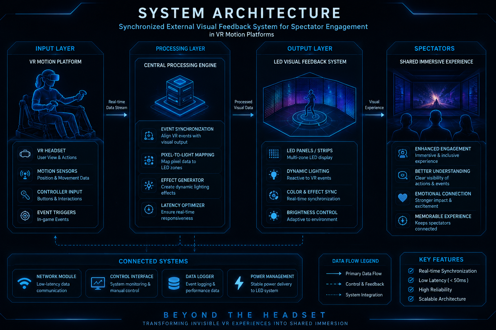

Initializing Spectator Feedback System...
Transforming invisible virtual reality experiences into shared spectator immersion through synchronized external visual feedback.
Spectator Engagement
Response Time
Synchronization
Core Innovations
The Synchronized External Visual Feedback System creates a shared immersive experience by translating VR events into real-world LED lighting effects. This research focuses on improving spectator engagement, reducing user isolation, and making virtual experiences visible to audiences outside the headset.
Spectators cannot see or understand what VR users are experiencing.
Audiences remain disconnected from immersive virtual experiences.
Interaction between users and observers becomes difficult.

The architecture captures VR event data, processes environmental information, and synchronizes dynamic LED responses for spectators in real time.
Maps virtual environment colors into real-world LED reactions.
Focuses on audience immersion rather than only the VR user.
Visualizes collisions, speed changes, and environmental transitions.
To investigate how synchronized external visual feedback can improve spectator engagement and awareness during VR motion platform experiences.
A prototype system was developed using Unity and LED-based visual feedback mechanisms. VR events were mapped to real-world lighting responses and observed from a spectator perspective.
System performance was evaluated by measuring synchronization accuracy, visual responsiveness, and the effectiveness of spectator-facing feedback.
Results indicate that synchronized LED feedback increases spectator awareness, improves engagement, and creates a stronger shared immersive experience between VR users and observers.
Creates a common experience for users and spectators.
Extends virtual events into physical environments.
Synchronizes room lighting with VR conditions.
Improves interaction between player and audience.
Immersive audience engagement systems.
Interactive visual experiences.
Research demonstrations and education.
Future adaptive immersive environments.
IT22082992
Motion Rendering and Control for Embodied VR Navigation
IT22119094
Environmental Interaction and Immersion Modelling for VR Aerial Navigation
IT22129208
Mechanical Integration and Stability Design for the VR Motion Seat Platform
IT22191724
Synchronized External Visual Feedback System for Spectator Engagement in VR Motion Platforms
Student: Shehan Nimsara
Module: SE4051 – Trends in Digital Media
Research Component:
Synchronized External Visual Feedback System for Spectator Engagement in VR Motion Platforms
Institution: SLIIT